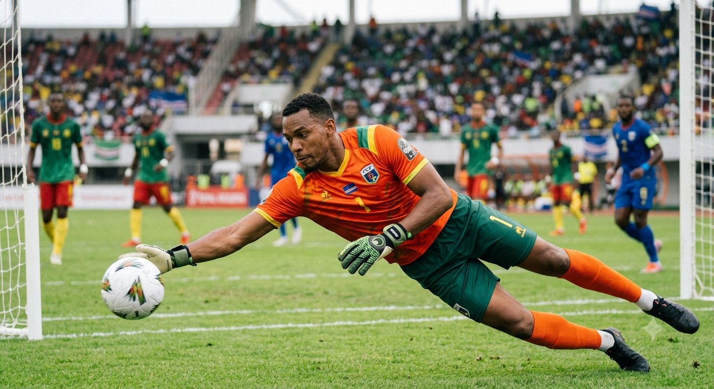

Feito Por:Rian Barbosa.
Vamos falar de Brasil né que começa a copa com alguns desfalques como Neymar do Santos ele volta a jogar nesta sexta feira dia 19 com a volta do principe eu acredito que a seleção jogue com sua presença. A seleção da Espanha empata com cabo verde na copa do mundo graças ao goleiro da seleção de cabo verde eles fazem hitoria na segunda copa do mundo. O goleiro da seleção de cabo verde que se chama Vozinha que coloca medo nos espnhois.
